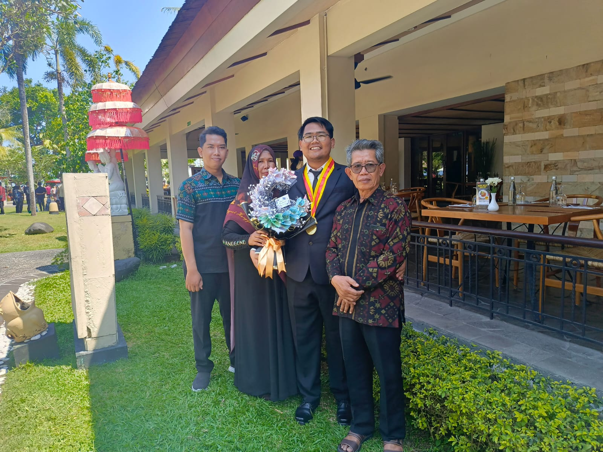

Hai, Saya Seorang Calon Guru
Fiari Rahman
S.Kom | Mahasiswa PPG 2026
Saya merupakan mahasiswa Pendidikan Profesi Guru (PPG) Tahun 2026 yang berasal dari Kota Denpasar, Bali. Kota ini dikenal sebagai salah satu pusat kegiatan budaya dan pendidikan yang tetap menjaga nilai-nilai kearifan lokal di tengah perkembangan zaman. Lingkungan tersebut membentuk pandangan saya mengenai pentingnya pendidikan. Melalui pendidikan, saya ingin berkontribusi dalam membentuk peserta didik yang tidak hanya memiliki kemampuan akademik yang baik, tetapi juga karakter yang kuat serta mampu beradaptasi dengan perkembangan teknologi dan kebutuhan zaman. Saya berharap dapat menjadi guru profesional yang terus belajar, berkembang, dan memberikan dampak positif bagi lingkungan sekolah maupun masyarakat.
Praktik Pengalaman Lapangan I
Pada kegiatan PPL I terbimbing ini, saya mendapat penugasan sebagai calon guru di SMP Negeri 2 Singaraja. Letak sekolah yang relatif dekat dengan tempat saya tinggal selama mengikuti kegiatan PPG di Singaraja yang memberikan kemudahan dalam menjalankan seluruh rangkaian kegiatan PPL. Dalam pelaksanaannya, saya diberikan tanggung jawab untuk mengajar di kelas VIII.7 dan VIII.10.
Guru Pamong Lapangan:
1.Ni Luh Putu Febry Erawati, S.Pd
Dosen Pembimbing Lapangan :
1. Prof. Dr. Ir. Dewa Gede Hendra Divayana, S.Kom., M.Kom., MCE., IPU., ASEAN.Eng., APEC.Eng.

Produk Rencana dan Perangkat Pembelajaran
Lampiran Nilai 7 & 8

Model guru yang dituju

Dedikasi Guru Menurut Saya
Model guru yang ingin saya wujudkan adalah guru yang mampu membantu peserta didik menemukan dan mengembangkan potensi terbaik yang mereka miliki. Menurut saya, keberhasilan seorang guru tidak hanya diukur dari seberapa banyak materi yang disampaikan, tetapi juga dari kemampuannya menciptakan pengalaman belajar yang bermakna bagi siswa. Oleh karena itu, saya ingin menjadi guru yang dapat membimbing, mengarahkan, dan mendampingi siswa dalam proses belajar maupun perkembangan karakter mereka.
Sebagai calon guru Informatika, saya ingin menghadirkan pembelajaran yang mendorong siswa untuk berpikir kritis, kreatif, dan mampu menyelesaikan permasalahan yang mereka hadapi. Teknologi akan saya manfaatkan sebagai sarana untuk memperluas kesempatan belajar, namun saya juga menyadari bahwa pembelajaran yang efektif tidak selalu bergantung pada perangkat digital. Oleh karena itu, saya akan memadukan penggunaan teknologi dengan berbagai aktivitas kolaboratif, diskusi, simulasi, maupun praktik langsung agar siswa memperoleh pengalaman belajar yang lebih beragam.
Saya juga meyakini bahwa pendidikan memiliki peran penting dalam membentuk karakter peserta didik. Karena itu, selain mengembangkan kemampuan akademik, saya ingin membantu siswa menumbuhkan sikap disiplin, tanggung jawab, kejujuran, serta kemampuan bekerja sama dengan orang lain. Nilai-nilai tersebut saya pandang sebagai bekal penting yang akan membantu mereka menghadapi berbagai tantangan di masa depan.
Dalam melaksanakan pembelajaran, saya akan berusaha memahami kebutuhan dan karakteristik setiap siswa. Saya menyadari bahwa setiap individu memiliki kecepatan belajar, minat, dan cara memahami materi yang berbeda. Oleh sebab itu, saya ingin menciptakan lingkungan belajar yang inklusif, memberikan kesempatan kepada setiap siswa untuk berkembang sesuai kemampuannya, serta mendorong mereka agar berani mencoba, belajar dari kesalahan, dan terus meningkatkan kualitas diri.
Kontak Saya
fiari8650@gmail.com
081339078524
Denpasar, Kecamatan Denpasar Utara